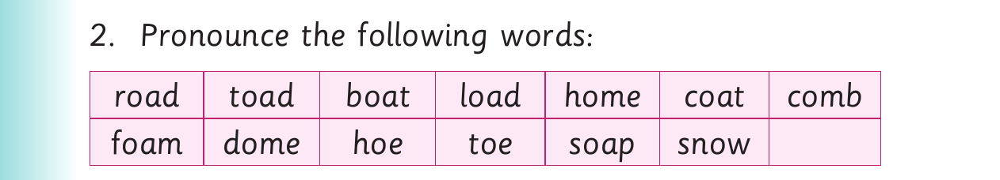
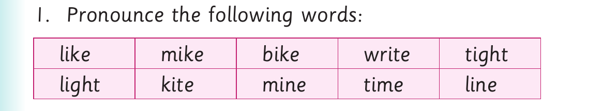

For Long vowel sounds - Activities 4 and 5, panel 1 of 3 shows this reviewed visual content: Three labelled pictures show a gold bar, a coat and a road for a long-vowel picture-naming activity. The printed labels and instructions include: 1. Name the following pictures orally: (a) (b) (c)
1. Name the following pictures orally:
(a) (b) (c)

For Long vowel sounds - Activities 4 and 5, panel 2 of 3 presents the source activity with these printed labels and instructions: 2. Pronounce the following words: road toad boat load home coat comb foam dome hoe toe soap snow
2. Pronounce the following words:
road toad boat load home coat comb
foam dome hoe toe soap snow
3. Pronounce the vowel in each word in (2).
4. Read the following sentences aloud:
(a) A toad croaks.
(b) Boats do not travel on roads.
(c) I have a comb at home.
(d) A boat carries heavy loads.
(e) Hoes and combs are tools.
(f) I saw snow on the peak of Mount Kilimanjaro.
Activity 5

For Long vowel sounds - Activities 4 and 5, panel 3 of 3 presents the source activity with these printed labels and instructions: 1. Pronounce the following words: like mike bike write tight light kite mine time line
1. Pronounce the following words:
like mike bike write tight
light kite mine time line